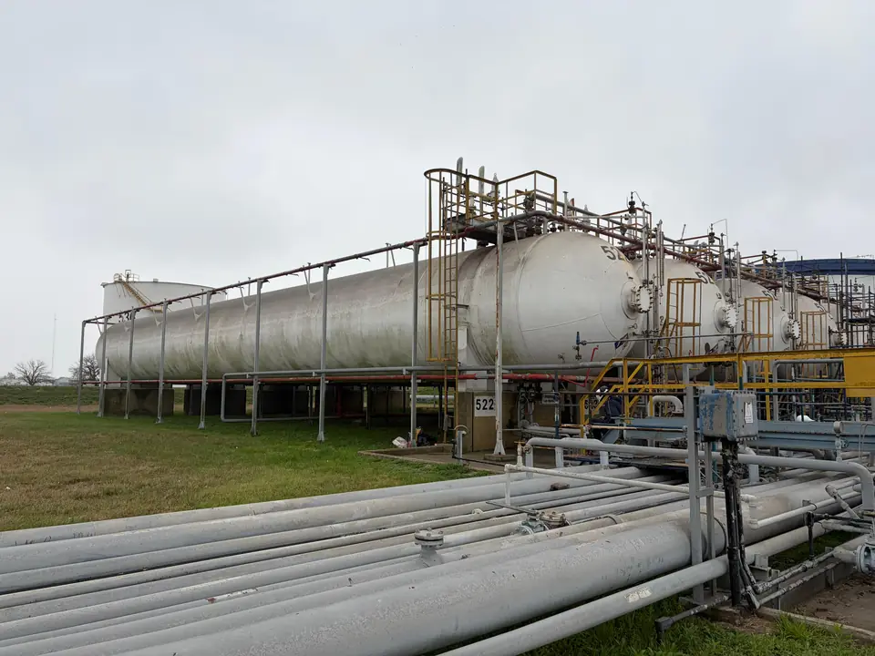
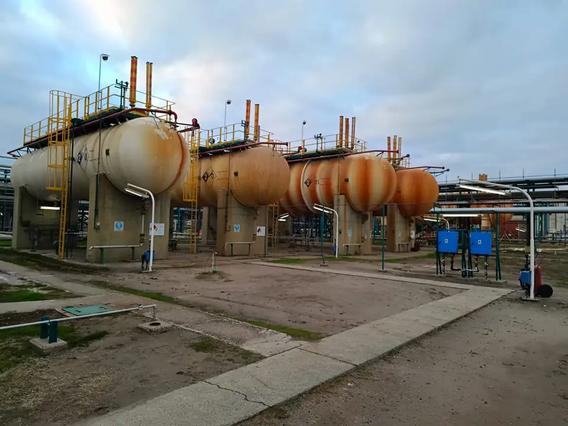
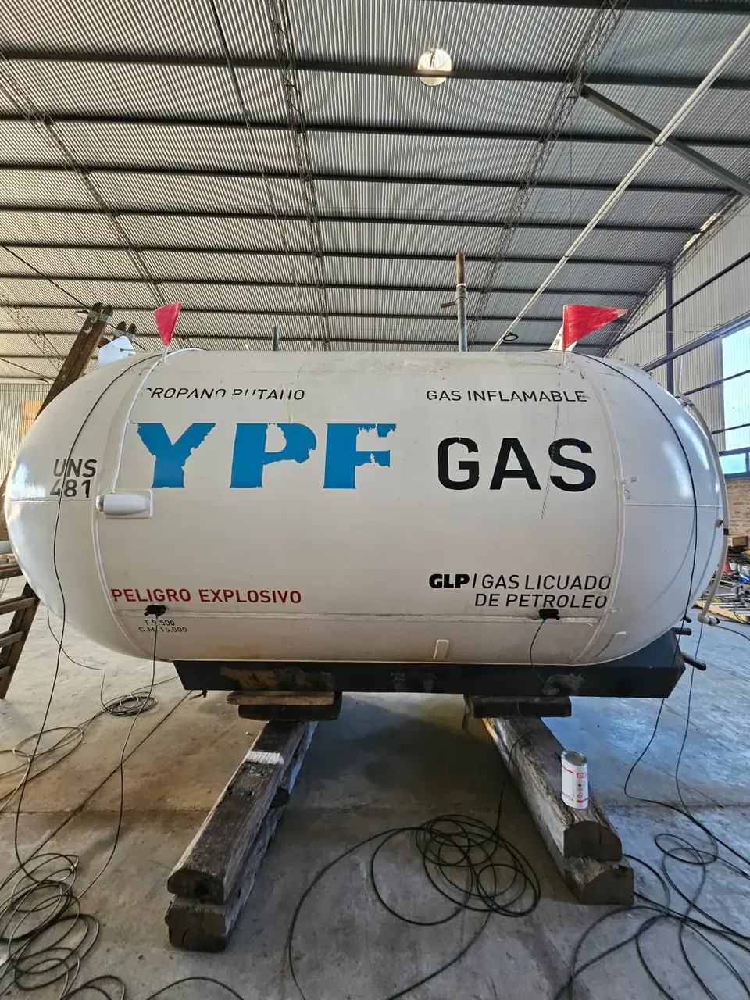
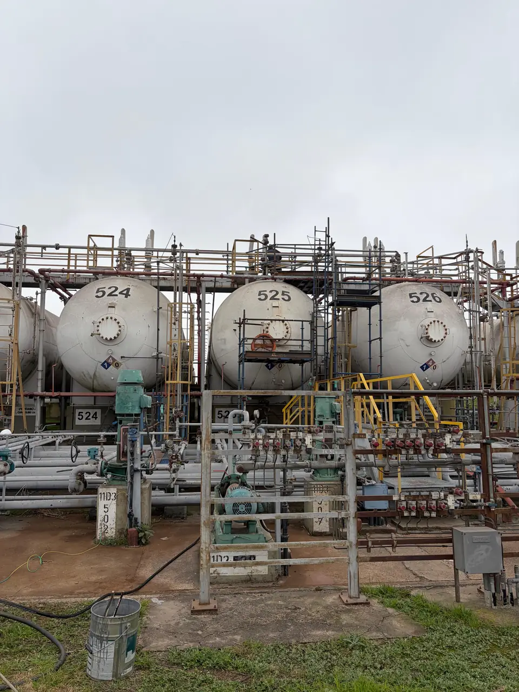

Rehabilitación de equipos almacenadores de GLP
Proceso completo de rehabilitación decenal de esferas, tanques y otros equipos de la industria del gas licuado de petróleo, con certificación final ante la Secretaría de Energía.
- Inspección visual externa e interna
- Ensayos no destructivos: UT, PM, LP, AE y PAUT
- Prueba hidráulica, informe y certificación
Qué equipos rehabilitamos
Trabajamos sobre los recipientes de almacenamiento de toda la cadena del GLP.

Esferas
[Descripción breve a confirmar por Veatec.]

Tanques y cilindros
[Descripción breve a confirmar por Veatec.]

Otros equipos de la industria del GLP
[Descripción breve a confirmar por Veatec.]
Cómo rehabilitamos un equipo
Ensayos, inspecciones y pruebas requeridas, hasta la certificación final.
Relevamiento y planificación
[Detalle a confirmar por Veatec.]
Inspección visual externa e interna
Evaluación del estado general del recipiente y sus accesorios.
Ensayos no destructivos
Ultrasonido, partículas magnéticas, líquidos penetrantes, emisión acústica y phased array.
Prueba hidráulica y certificación
Informe técnico y certificación final ante la Secretaría de Energía.
Experiencia comprobable

Rehabilitación de cilindro de GLP TK 525
[Resumen del desafío y la solución en dos o tres líneas.]
Leer el caso completoLo que suelen consultarnos
¿Cada cuánto hay que rehabilitar un equipo de GLP?
La rehabilitación de los recipientes de GLP es decenal. [Ampliar con la normativa aplicable — a confirmar por Veatec.]
¿Qué ensayos incluye la rehabilitación?
Inspección visual externa e interna, ensayos no destructivos (ultrasonido, partículas magnéticas, líquidos penetrantes, emisión acústica y phased array) y prueba hidráulica, con informe y certificación.
¿Quién emite la certificación final?
El proceso concluye con la certificación final ante la Secretaría de Energía.
¿Cuánto tiempo queda fuera de servicio el equipo?
[Rango estimado según tipo de equipo y capacidad — a confirmar por Veatec.]
¿Trabajan en todo el país?
Sí, trabajamos en toda la Argentina.
Solicite la evaluación técnica de su equipo
Complete los datos del equipo y le respondemos con una propuesta preliminar.
- Consultas técnicastecnica@veatec.com.ar
- Teléfono+54 9 11 6364-4915